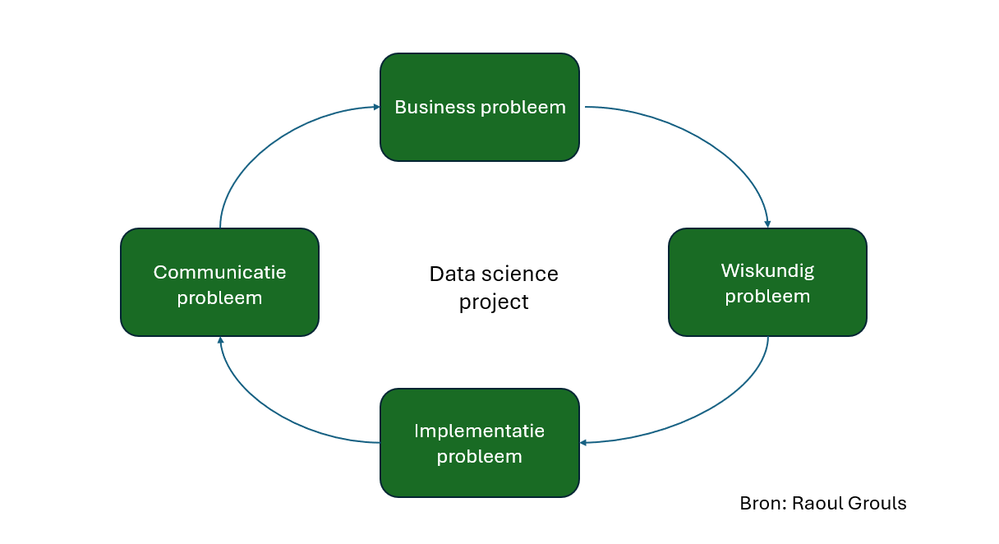

In de eerste les van de connection workshops die gegeven werden door Hubért hebben we uitleg gekregen over de uiteindelijke opdracht en hebben we een uitleg gekregen over HTML, CSS en JavaScript, en ook wat we allemaal moesten downloaden om te kunnen werken. Hier zijn wij begonnen met een pagina maken waar we “Hello World” opschrijven. Doordat ik HBO-ICT doe, heb ik deze informatie al een keer gehad. Maar ook al heb ik deze informatie al, was het voor mij wel goed om deze informatie weer naar boven te halen en mensen te helpen die dit nog niet gehad hebben.
In de tweede les hebben we geleerd hoe je een pagina in HTML moet opzetten, de “head”, “body”, “header” en wat je hier in moet zetten. Ik vond het tijdens deze les interessant om het nog een keer te horen en om het perspectief van de wat meer bedrijfskundige te horen te krijgen. Ik vond het interessant om het nog een keer te horen omdat ik tijdens mijn studie niet heb meegekregen wat het allemaal betekent en tijdens deze workshop van Hubért werd het allemaal nog een keer goed uitgelegd.
Tijdens de derde les hebben we een uitleg gekregen over API’s, Application Programming Interface. Dit was voor mij niet de eerste keer dat ik werkte met API’s maar wel de eerste keer in HTML, want tijdens mijn studie moest ik werken met Java. Het was voor mij interessant om te werken met API’s in HTML omdat dit net op een andere manier werkt, waardoor ik weer meer geleerd heb over programmeren. Het was daarnaast ook leuk om te zien hoe de andere leerlingen hiermee om gingen, vooral om te zien dat zij met dezelfde dingen moeite hadden als ik dat had de eerste keer dat ik het moest doen. Ik heb in deze les 2 API’s gebruikt om verschillende gegevens weer te geven, namelijk: het weer en de foto van de dag van NASA.
Foto van de dag, NASANaast dat we tijdens deze minor geleerd hebben over websites bouwen, hebben we ook geleerd over AI. Dit was voor mij heel interessant want ik wil meer met AI en algoritmes doen, op professioneel gebied.
De eerste AI workshop, gegeven door Raoul Grouls, was een introductie waar Raoul vertelde over verschillende machine learning modellen. Dit heeft mij een breder beeld gegeven over AI en wat het allemaal inhoudt. Ik vond het vooral interessant om te zien dat Raoul een simulatie liet zien van hoe mieren de snelste route vinden door middel van geur.
Tijdens de tweede AI workshop heeft Raoul aan de klas gevraagd waar we meer over te weten wilde komen. Daar kwam uit dat we een simpele machine learning oplossing wilde maken en we wilden meer te weten krijgen over data science projecten. Uit deze les kwam de conclusie dat het handig is om de laatste les op te delen in twee delen, namelijk: het bedrijfskundige deel en het technische deel.
Tijdens de derde les begonnen we eerste met het bedrijfskundige deel. Dit houdt in dat we het gehad hebben over hoe een data science project werkt van begin tot eind, hier hebben wij ook een model gekregen wat bij ons project heel erg van toepassing was. In het tweede deel van de les hebben we samen met Raoul een machine learning model gemaakt.
